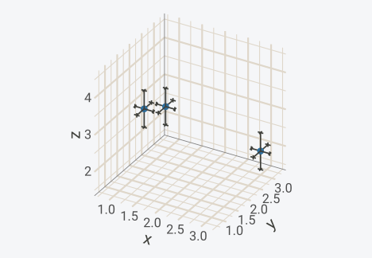
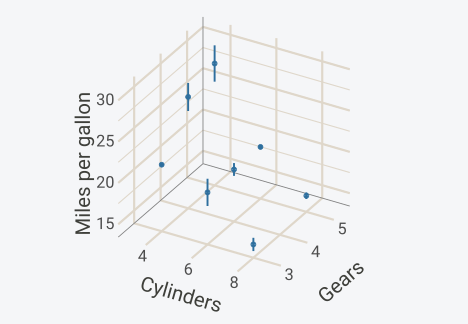
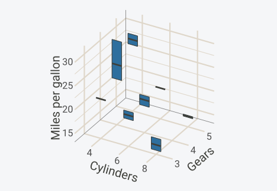

Intervals show supplied lower and upper bounds around a position. They can describe measurement uncertainty, variation among observations or uncertainty in a summary, depending on how the bounds were computed. This article draws intervals on three axes and summarises petal lengths by species. Installation is covered in Get started.
Map the centre and both bounds for each interval axis.
Choose capped bars, point ranges or boxes.
Compute grouped summaries when the input contains repeated observations.
Example
Drawing supplied bounds
Each row below describes a measured position and a stated half-width on every axis, in arbitrary units. geom_errorbar_3d() draws a bar for each pair of bounds. The example widths are supplied values; the layer draws them without estimating their statistical meaning.
measurements <- data.frame(x = c(1, 2, 3), y = c(2, 1, 3),
z = c(3, 4, 2))
ranges <- ggplot(measurements, aes(x, y, z = z,
xmin = x - 0.2, xmax = x + 0.2,
ymin = y - 0.3, ymax = y + 0.3,
zmin = z - 0.5, zmax = z + 0.5))
ranges + geom_errorbar_3d(width = 0.12, cap_plane = "cross",
linewidth = 0.8) +
geom_point_3d(size = 3, colour = "#2E6F9E") + coord_3d()
Cross-shaped caps extend in both directions perpendicular to each
bar. The width is measured in transformed coordinate units along those
directions. For a single z interval, cap_plane = "xz" puts
the caps along x. A missing pair of bounds omits that axis; supply both
endpoints for every interval that should appear.
| Geometry | Display |
|---|---|
geom_linerange_3d() |
Interval segments |
geom_errorbar_3d() |
Segments with endpoint caps |
geom_pointrange_3d() |
Segments and a centre point |
geom_crossbar_3d() |
Boxes with a line at the centre |
The same mappings can draw point ranges. Use them when the centre and extent are enough to read the interval. Joint uncertainty across axes needs a model of their dependence; three separate marginal intervals do not define a joint confidence region.
ranges + geom_pointrange_3d(colour = "#2E6F9E", linewidth = 0.8) +
coord_3d()
Summarising repeated observations
The iris table records petal lengths in centimetres for three species. stat_summary_3d() summarises z within each group and each distinct x/y position. Its default summary is the mean plus or minus one standard error, calculated from the observations in that cell.
flowers <- ggplot(iris, aes(Species, y = 0, z = Petal.Length)) +
scale_y_continuous(limits = c(-1, 1), breaks = NULL) +
scale_x_discrete(guide = guide_axis_3d(n.dodge = 2))
flowers + stat_summary_3d(fun.data = mean_se, colour = "#2E6F9E",
linewidth = 0.9) +
labs(z = "Petal length (cm)", y = NULL) + coord_3d()
One standard error describes precision of the sample mean. To display the spread of observations, supply a summary such as the median with the first and third quartiles. The function returns columns named y, ymin and ymax, which the stat translates to the selected axis.
quartiles <- function(x) {
q <- quantile(x, c(0.25, 0.5, 0.75), names = FALSE)
data.frame(y = q[2], ymin = q[1], ymax = q[3])
}
flowers + stat_summary_3d(fun.data = quartiles, geom = "crossbar",
width = 0.35, fill = "#2E6F9E") +
labs(z = "Petal length (cm)", y = NULL) + coord_3d()
An explicit group mapping separates summaries that share a position. Discrete colour and fill mappings also define groups. Mapping a different group to every observation prevents pooling; a standard error then cannot be estimated from within-cell variation. Summaries use scale-transformed values, so applying a logarithmic scale changes the quantity being averaged. Compute summaries in original units before plotting when that is the intended quantity.
Mixed singleton and repeated cells can currently produce a column-binding error in the summary stat. For such data, prepare the summary table first, assigning bounds only where the chosen summary is defined.
Preparing a summary table
A precomputed table makes the bounds available for checking and reuse. The following table contains one row per species, with the mean and one-standard-error bounds in centimetres. Its named columns feed directly into the point-range layer.
summary_table <- do.call(rbind, lapply(split(iris, iris$Species), function(d) {
mean_length <- mean(d$Petal.Length)
se <- sd(d$Petal.Length) / sqrt(nrow(d))
data.frame(species = d$Species[1], mean = mean_length,
lower = mean_length - se, upper = mean_length + se)
}))
rownames(summary_table) <- NULL
summary_table
#> species mean lower upper
#> 1 setosa 1.462 1.437440 1.486560
#> 2 versicolor 4.260 4.193545 4.326455
#> 3 virginica 5.552 5.473950 5.630050
ggplot(summary_table, aes(species, y = 0, z = mean,
zmin = lower, zmax = upper)) +
geom_pointrange_3d(colour = "#2E6F9E", linewidth = 0.9) +
scale_y_continuous(limits = c(-1, 1), breaks = NULL) +
scale_x_discrete(guide = guide_axis_3d(n.dodge = 2)) +
labs(z = "Petal length (cm)", y = NULL) + coord_3d()
Positioning groups and observations shows how to separate groups within a cell. For fitted-mean uncertainty and observation-to-fit segments, use the model examples in Surfaces, solids and fields. Its ellipsoid examples describe three-dimensional spread and uncertainty in a mean.